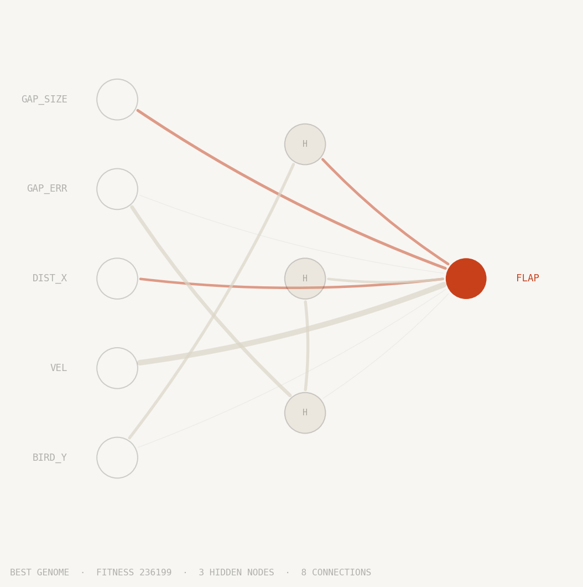

Machine Learning & Simulation
01 / Project
Overview
This project uses NEAT (Neuroevolution of Augmenting Topologies, Stanley & Miikkulainen, 2002) to evolve neural networks that learn to play Flappy Bird.
NEAT treats topology as something to discover rather than decide. Layers and nodes are not chosen in advance; the algorithm starts minimal and adds structure only when it helps.
How it works
The population plays a seeded, deterministic version of the game so every agent faces the same pipe sequence. Fitness is determined by pipes cleared; birds that die before reaching the first pipe score only their survival frames. The strongest genomes are selected, bred in pairs, and mutated to seed the next generation.
Every network starts flat, with inputs wired directly to the output and no hidden layers. Structural complexity grows only through mutation: a connection mutation links two previously unconnected nodes; a node mutation splits an existing connection by inserting a hidden node in the middle, disabling the original and replacing it with two new connections that preserve its effect. This means the network earns every neuron it gets.
Crossover between two parent genomes is made tractable by innovation numbers. Every connection, whenever it first appears in any genome, receives a unique global ID. When two parents are bred, connections with matching IDs are inherited randomly from either parent; connections present in only one parent are inherited from the fitter one. This aligns genes structurally rather than positionally, which matters once topologies start diverging.
Speciation groups structurally similar genomes into niches, so innovative topologies aren't immediately outcompeted by more refined but simpler networks. Innovations get time to develop before competing at population scale.
Replay viewer
The viewer replays recorded training data. Each generation shows the top 20 candidate networks selected by fitness rank. The orange-ringed bird is the generation's champion. Scrubbing between early and late generations makes the behavioral shift visible: early birds flap frantically and die within seconds; later ones settle into a measured rhythm that carries them through the full sequence.
Training stops automatically once all 20 birds survive the full evaluation window without dying. A generation limit exists as a fallback; in practice the population always converged before the limit. This run converged at generation 15.
The overlay shows the number of generations, birds still alive, the best pipe count reached so far, and pipes cleared in the current frame.
Challenges
Convergence without gradients
There is no loss function to minimise. Whether adding a hidden node or a new connection actually helps can only be measured by running the full simulation, so the feedback loop is slow and noisy. Fitness routinely spikes by an order of magnitude one generation and collapses the next. Distinguishing genuine progress from noise was the central difficulty. Per-species elitism, carrying the best genome in each species forward unchanged, was the main stabiliser: it prevented a lucky high-fitness genome from being mutated away before the population caught up.
Speciation threshold
NEAT protects innovation by competing genomes only within their species. The compatibility threshold controls species count, and its effect is outsized: at 0.5 the population fragmented into 40+ species by generation 3 and stalled; at 3.0 everything collapsed into one species and structural innovation died before it could compound. 1.2 worked: a stable single-digit species count each generation meant the threshold was calibrated correctly.
Replay determinism
Making the browser viewer reproduce training exactly required each generation to be independently seeded. A single global seed would let the RNG drift across birds and generations: each agent's simulation consumes a variable number of random calls depending on survival length, so later birds would face different pipe sequences than earlier ones in the same generation. Seeding by generation index fixes the pipe sequence for the entire cohort and lets the viewer jump to any generation without replaying from the start.
Best genome

Each circle is a neuron. The five inputs on the left feed the network sensor readings: the bird's height, its vertical velocity, horizontal distance to the next pipe, how far the gap centre is from the bird, and the gap's size. The output on the right fires a single decision: flap or don't flap.
Lines between neurons are weighted connections. Thicker lines carry more influence; orange lines suppress activation, grey lines amplify it. Connections that evolution disabled are shown faintly and carry no signal.
Neurons in the middle column emerged during training. NEAT started with no hidden layer at all. Every hidden node was added by mutation across generations and retained only if it improved survival. The network you see is the minimal structure that learned to pass pipes indefinitely in the replay above.
How it's built
Python. The entire NEAT algorithm is implemented from scratch: genome encoding, mutation, crossover, speciation, and innovation tracking. No ML frameworks, no NEAT libraries. Matplotlib is the only dependency, used solely to render the genome diagram.
HTML5 Canvas and vanilla JavaScript. The replay viewer is a self-contained file pair with no framework and no game engine. Raw Canvas 2D API renders 20 birds simultaneously at up to 4× speed.
JSON. Training writes two files: the best genome and the full generation-by-generation replay. The browser reads them directly off a static host. No server, no API, no database.
View Source on GitHub →Scroll to zoom · Click outside to close